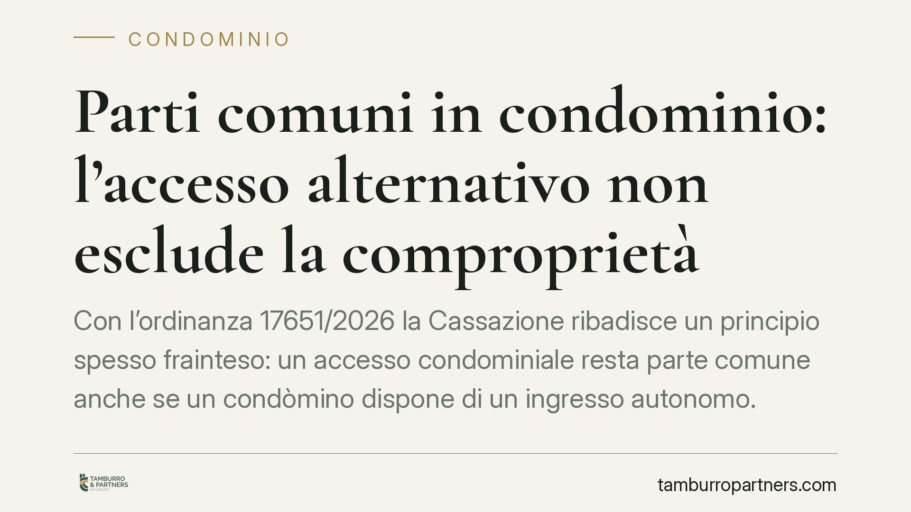

Parti comuni in condominio: l'accesso alternativo non esclude la comproprietà
Con l'ordinanza 17651/2026 la Cassazione ribadisce un principio spesso frainteso: un accesso condominiale resta parte comune anche se un condòmino dispone di un ingresso autonomo. La presunzione di comproprietà si supera solo con il titolo originario, da valutare al momento in cui il condominio è sorto. Una pronuncia che incide su numerose liti tra condòmini e proprietari esclusivi.

Il caso
La controversia nasce dalla pretesa di un proprietario di ottenere l'uso esclusivo di un accesso condominiale, sostenendo di disporre comunque di un ingresso alternativo alla propria unità immobiliare. La tesi: se posso entrare da un'altra parte, quell'accesso non mi serve e dunque non rientra tra le parti comuni.
La Corte d'appello di Bari aveva respinto l'impostazione. La Cassazione, Sezione II, con l'ordinanza n. 17651/2026 (data di riferimento 3 giugno 2026), conferma: la disponibilità di un accesso diverso non basta a escludere la natura comune del bene.
Inquadramento normativo
Il riferimento è l'art. 1117 del Codice civile, che elenca le parti dell'edificio presunte comuni "se non risulta il contrario dal titolo": tra queste, gli ingressi, gli androni, i portici, i cortili e, in generale, le strutture destinate all'uso comune.
Si tratta di una presunzione legale relativa: la legge presume la comproprietà, ma ammette prova contraria. Il punto decisivo è che tale prova non può consistere in circostanze di fatto sopravvenute, come l'esistenza di un secondo accesso. Deve risultare dal titolo originario, cioè dall'atto che ha dato vita al condominio separando le proprietà individuali da quelle comuni.
La Cassazione precisa inoltre che la valutazione va ancorata al momento genetico del condominio: occorre guardare alla situazione esistente quando l'edificio è stato frazionato tra più proprietari, non a quella attuale. È in quel momento che si cristallizza la destinazione del bene a servizio comune.
Implicazioni pratiche
La pronuncia ha effetti concreti su un tipo di lite molto diffuso. Chi rivendica l'uso esclusivo di un androne, di un passaggio o di un accesso deve confrontarsi con due ostacoli.
Primo: non è sufficiente dimostrare di non avere "bisogno" di quel bene. L'utilità soggettiva del singolo non incide sulla qualificazione giuridica del bene come comune.
Secondo: l'onere della prova è rigoroso. Per vincere la presunzione dell'art. 1117 c.c. serve un titolo che, in modo chiaro, attribuisca la proprietà esclusiva di quel bene a un singolo condòmino. In mancanza, il bene resta comune.
Per gli altri condòmini, la decisione rafforza la tutela della comproprietà: un accesso non può essere "privatizzato" sulla base di argomenti pratici o di soluzioni alternative. Chi contesta la natura comune deve portare in giudizio il documento che prova il contrario, non una semplice ricostruzione dei fatti.
Un ulteriore riflesso riguarda la lettura dei regolamenti e degli atti di acquisto. Spesso le parti confidano nelle clausole del regolamento condominiale, ma queste non sempre coincidono con il titolo costitutivo. Rileva ciò che risulta dall'atto che ha originato la pluralità di proprietari.
Cosa fare in concreto
- Recuperate il titolo originario. Procuratevi l'atto di frazionamento o il primo atto di vendita delle unità: è il documento che decide la questione, non il regolamento né gli usi successivi.
- Verificate la data di nascita del condominio. Ricostruite il momento genetico e la situazione del bene a quell'epoca: è lì che si valuta la destinazione comune.
- Non fondate la pretesa sull'utilità. Se intendete rivendicare un uso esclusivo, prima di agire accertate l'esistenza di un titolo idoneo a superare la presunzione dell'art. 1117 c.c.
- Documentate lo stato dei luoghi. In caso di contenzioso, una perizia tecnica che descriva accessi e collegamenti può supportare la ricostruzione del quadro originario.
- Fate valutare il caso prima del giudizio. Trattandosi di prova rigorosa, consigliamo di esaminare preventivamente la solidità della posizione per evitare azioni destinate al rigetto.
La decisione conferma un orientamento consolidato: in condominio la regola è la comproprietà, l'eccezione va provata con il titolo. Chi vuole uscire dalla regola deve dimostrarlo con rigore, non con la convenienza.
---
*Contributo informativo a cura di Tamburro & Partners - Avv. Giuseppe Tamburro. Non costituisce parere legale.*
Ogni condominio ha una storia a sé.
Se gestisci un'amministrazione e vuoi un confronto su una specifica questione condominiale, scrivi allo studio. Ti rispondiamo entro un giorno lavorativo.